Новите AI чипове на Meta влизат в производство през септември
Американският технологичен гигант Meta се готви да стартира производството на най-новата версия на своите специализирани чипове за изкуствен интелект през септември 2026 г. Според информация на агенция Reuters, цитираща вътрешен документ на компанията [1], поне една от версиите на новия хардуер вече е преминала успешно тестовата си фаза в рамките на около шест седмици [2]. С тази стъпка компанията цели да намали зависимостта си от външни доставчици на графични ускорители и да оптимизира разходите си за инфраструктура в условията на глобален дефицит на компоненти.
Партньорство с Broadcom и TSMC
Проектирането на новите чипове се извършва в сътрудничество с американската безфабрична компания Broadcom [2]. За самото физическо производство обаче Meta ще разчита на тайванския гигант TSMC, който е технологичен лидер в полупроводниковата литография [2].
Завършените чипове ще се сглобяват с RAM памет, доставена от южнокорейската корпорация Samsung [2]. Освен това Meta ще купува решения за флаш съхранение на данни от SanDisk и оптично оборудване за бърза връзка от Sumitomo Electric [2].

Изображение: Svetni.me / Авторско изображение
Модулна архитектура и верига на доставките
Разработката е част от дългосрочната програма MTIA (Meta Training and Inference Accelerator), стартирала официално през 2023 г. [2]. Компанията залага на модулен подход при изграждането на чиповете чрез т.нар. чиплети (modular chiplets) [2].
Този подход позволява бързо и гъвкаво адаптиране на хардуера към постоянно променящите се изисквания на ИИ моделите. Новите ускорители ще се използват основно за обучение на алгоритми за препоръки и класиране на съдържание в социалните мрежи на Meta, както и за изпълнение на задачи по извличане на изводи (inference) [2].
Мащабиране на изчислителния капацитет
Meta планира мащабно разширяване на своята инфраструктура с цел обучение и внедряване на новата си линия модели от серията Muse Spark [2]. За целта компанията сключва големи договори за енергийни доставки и строителство на нови центрове за данни.
Според цитирания вътрешен документ, целта на Meta е да разположи 7 гигавата изчислителна мощност през текущата година и да я удвои до 14 гигавата през следващата [2]. Това се подкрепя от прогнозираните за тази година колосални капиталови разходи в размер между 125 и 145 милиарда долара, насочени предимно към ИИ технологии [2].
Конкуренция при ИИ хардуера
Собственият силиций е ключов елемент в стратегията на Meta за ограничаване на разходите за чипове от водещите играчи NVIDIA и AMD, макар компанията да планира да продължи да купува големи обеми от техния хардуер [2]. Meta не е единствената, която поема по този път.
OpenAI работи съвместно с Broadcom по собствен процесор за извличане на изводи, а Anthropic проучва възможности за разработка на чипове със Samsung [2]. В същото време облачни гиганти като Google и Amazon вече имат утвърдени серии от собствени ИИ чипове, за да посрещнат експлозивното търсене в индустрията [2].
Източници:
[1]: Meta to put AI chip into production in September as it looks to double computing capacity - Reuters scoop
[2]: Meta’s new AI chips will begin production in September - TechCrunch